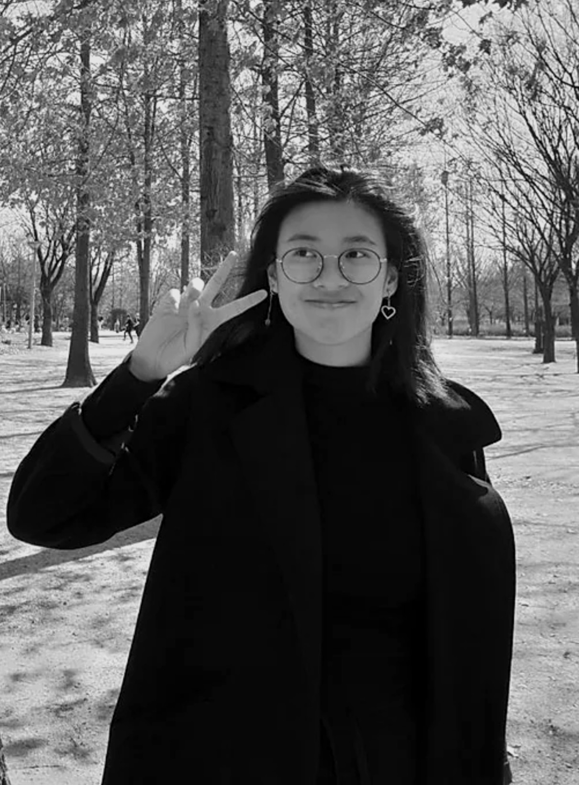

As an undergraduate in National University of Singapore, attaining a degree in Division of Industrial Design, the primary purpose as a UX enthusiast is to bridge gaps in various experience jouneys and focus on people's needs. While deciphering people's stories, I enjoy picking up significant details along the way and reinterpreting them into simple and easy-to-use design in a variety of scenarios.
Abilities
- 1. Conducting quantitative and qualitative user research to pick out insightful data points.
- 2. Deciphering and uncovering data points by conducting data analysis and making sesnse of the findings to seize design opportunities from the data.
- 3. Prototyping from low to high fidelity using softwares such as Axure RP or Adobe XD.
- 4. Turning prototypes alive using a little hardwork and magic!